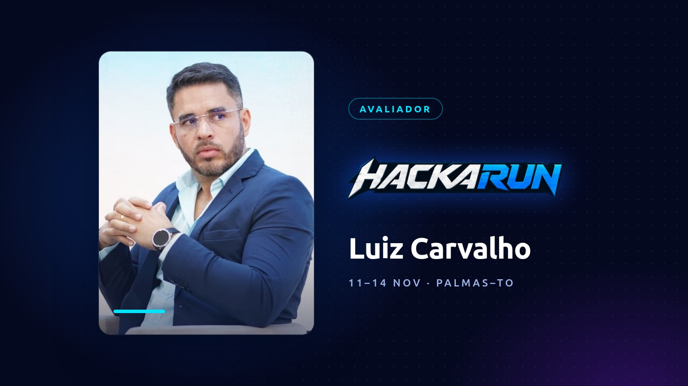

O que é o HackaRun 2026 e como os projetos são avaliados?
O HackaRun 2026 é a primeira edição do hackathon da UniCatólica, em Palmas, no Tocantins. O evento acontece de 11 a 14 de novembro de 2026 e reúne os cursos de Engenharia de Software e Inteligência Artificial. Ele funciona como uma corrida por objetivos. Ou seja, as equipes cumprem três missões em sequência e desenvolvem uma solução a partir de um desafio da organização. As equipes são formadas por sorteio presencial, com quatro ou cinco integrantes. Em seguida, uma banca de avaliadores dá notas de 0 a 10 em cinco critérios. A funcionalidade vale 30% da nota final. Qualidade técnica, inovação e IA e missões e evidências valem 20% cada. Por fim, o pitch vale 10%. Eu participo como um dos avaliadores, como Diretor de Tecnologia e Inovação da Startup Tocantins. A final é no sábado, 14 de novembro, a partir das 17h, no Capim Dourado Shopping. Este post explica o formato, as missões e o que a banca olha em cada projeto.
Hackathon costuma ser lembrado pela madrugada de código. No entanto, o que decide a nota é outra coisa: uma solução que funciona na frente da banca.

Como funciona a corrida por objetivos
O HackaRun é uma competição de tecnologia, inovação e empreendedorismo. Primeiro, a quarta-feira, 11 de novembro, foi dedicada a oficinas de capacitação. Os temas foram validação de ideias, Git e GitHub e desenvolvimento com IA.
Em seguida, na quinta-feira, 12 de novembro, as equipes foram formadas por sorteio presencial. Por isso, a inscrição foi individual. Ninguém escolheu com quem iria trabalhar.
A partir daí, o trabalho segue três missões em sequência. A programação completa está no site oficial do HackaRun.
- Missão 1, problemas e requisitos: delimitar o problema, definir o público-alvo e a proposta de valor, montar um canvas simplificado e priorizar o backlog.
- Missão 2, desenvolvimento e validação do protótipo: entregar um protótipo funcional, com código versionado, fluxo principal implementado e evidências de testes.
- Missão 3, produto final e pitch em vídeo: fechar a versão final, o repositório, a documentação e um vídeo de pitch de 1min15s a 2min.
O que a banca avalia em cada projeto
A banca dá notas de 0 a 10 em cinco critérios. Cada um tem um peso diferente na nota final.
- Funcionalidade, 30%: a solução precisa funcionar.
- Qualidade técnica, 20%.
- Inovação e IA, 20%.
- Missões e evidências, 20%.
- Pitch, 10%.
Funcionar vale três vezes mais do que apresentar bem
A funcionalidade pesa 30% e o pitch pesa 10%. Portanto, uma boa apresentação não compensa um produto que não roda. Além disso, a funcionalidade é o primeiro critério de desempate.
Em caso de empate, vence a maior nota em funcionalidade. Depois, entram qualidade técnica, missões e evidências e pitch presencial. Se o empate continuar, a banca decide.
A IA é liberada, desde que declarada
O regulamento libera o uso de Inteligência Artificial na ideação, no código, nos testes e na documentação. No entanto, há duas condições. O uso precisa ser declarado, e a equipe responde pelo que a IA gerar.
Essa regra combina com o que eu defendo nas minhas palestras sobre Inteligência Artificial. Ou seja, a ferramenta acelera o trabalho, mas a responsabilidade pelo resultado continua sendo de quem entrega.
Por que aceitei estar na banca
Já atuei mais de 20 vezes como mentor e jurado em eventos de inovação e tecnologia. Também passei por 10 startups ao longo da carreira. Por isso, sei o quanto alguns dias de pressão ensinam sobre produto.
Além disso, um hackathon universitário aproxima quem está começando de quem já empreende com tecnologia no Tocantins. A minha trajetória completa está na página sobre o autor.
Quando e onde é a final
A final é no sábado, 14 de novembro de 2026, a partir das 17h, no Capim Dourado Shopping, em Palmas. Primeiro, há a abertura com a retrospectiva do evento. Em seguida, das 17h30 às 18h30, as equipes apresentam o pitch presencial. A final é aberta ao público.
Perguntas que sempre chegam
- O que é o HackaRun?
- O HackaRun é uma competição de tecnologia, inovação e empreendedorismo da UniCatólica, em Palmas (TO). Ele funciona como uma corrida por objetivos. Ou seja, as equipes cumprem missões em sequência e desenvolvem uma solução a partir de um desafio. A edição de 2026 é a primeira.
- Quem pode participar do HackaRun?
- Podem participar estudantes da UniCatólica, universitários de outras instituições, profissionais e entusiastas de tecnologia. No entanto, menores de 18 anos precisam de autorização do responsável legal. A inscrição é individual, porque as equipes são formadas por sorteio presencial.
- Quais são os critérios de avaliação do HackaRun 2026?
- São cinco critérios, com notas de 0 a 10. A funcionalidade vale 30% da nota final. Em seguida, qualidade técnica, inovação e IA e missões e evidências valem 20% cada. Por fim, o pitch vale 10%.
- É permitido usar inteligência artificial no HackaRun?
- Sim. O uso de IA é liberado na ideação, no código, nos testes e na documentação, desde que seja declarado. Além disso, a equipe responde por tudo o que a IA gerar.